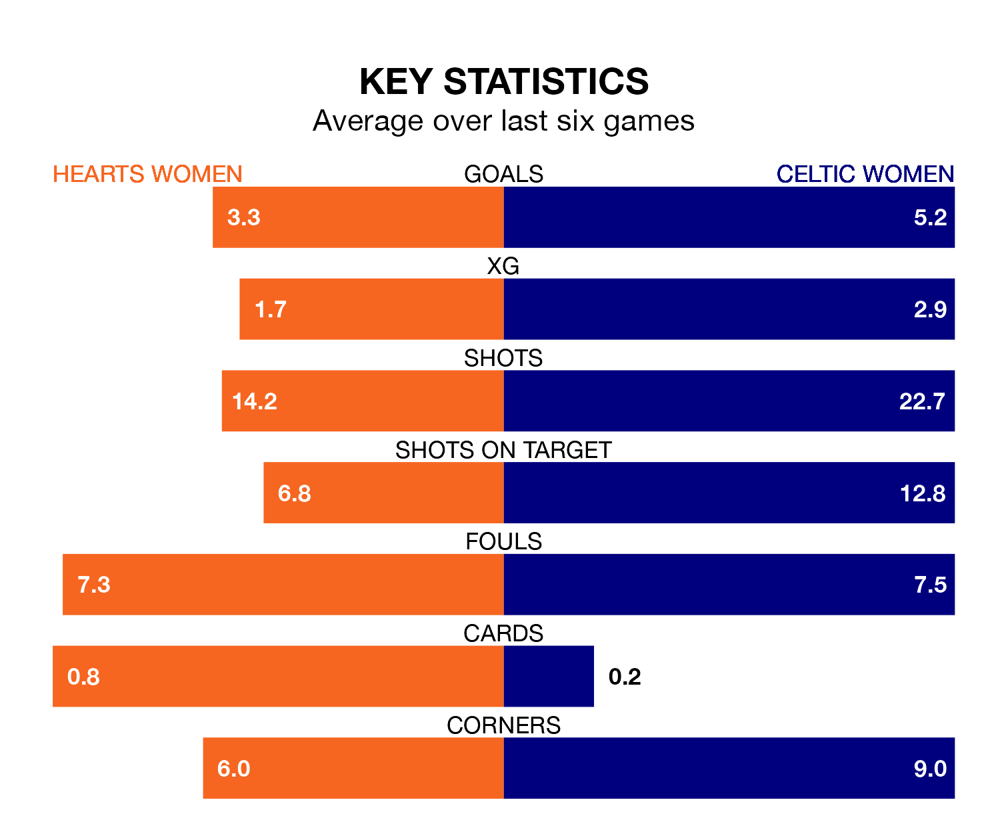

Sunday's match between Hearts Women and Celtic Women promises to be one for the neutrals, as two of SWPL 1's most free-scoring sides go head-to-head.
Ahead of the game at Oriam National Performance Centre, Hearts and Celtic sit third and top in the goal-scoring charts, with 41 and 80 goals respectively.
Midfielder Katie Jayne Lockwood leads the way for the home side, having bagged 12 goals in their 15 games to date.
And Amy Gallagher has been the main man in the opponents' penalty box for Celtic, with 16 goals.
In Kelsey Daugherty, Celtic can rely on one of the league's safest pair of hands. She has kept seven clean sheets in her 11 appearances this season, and no 'keeper has prevented the opposition scoring more often in SWPL 1.
In Hearts' net, Lisa Maher-Rodgers has two clean sheets in three games. She has conceded a goal every 90 minutes, 60% more often than the 141 minutes between goals for Daugherty.
The visitors are second in the table after 15 games, of which they have won 14 and lost one, earning 42 points.
The home side are three places behind Celtic in fifth, with eight wins and two draws putting them on 26 points.
Hearts are in good form in SWPL 1, with four wins and a draw from their last six games.
With five wins and one loss over that period, Celtic's form is slightly better – they have taken 15 points from 18, compared to Hearts' 13.
Over the last two years, Hearts and Celtic have played each other on seven occasions. Celtic won all of them.
On average, Hearts scored 0.4 goals and Celtic 3.3 in those matches.
Their last meeting was on September 13, when Celtic won 3-2 at home.
Hearts' last match was on December 10, a 4-1 win against Partick Thistle Women, with Lockwood (two), Carly Girasoli and Ciara Grant getting the goals for Hearts.
Celtic beat Spartans Women 7-0 last time out, also on December 10, with Caitlin Hayes (two), Celya Barclais, Clare Goldie, Gallagher, Jennifer Smith and Murphy Agnew on the scoresheet.
